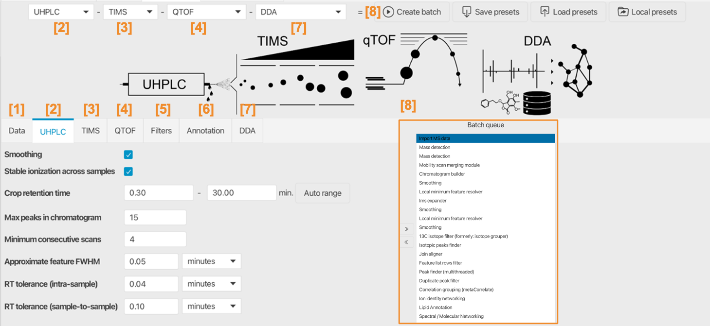
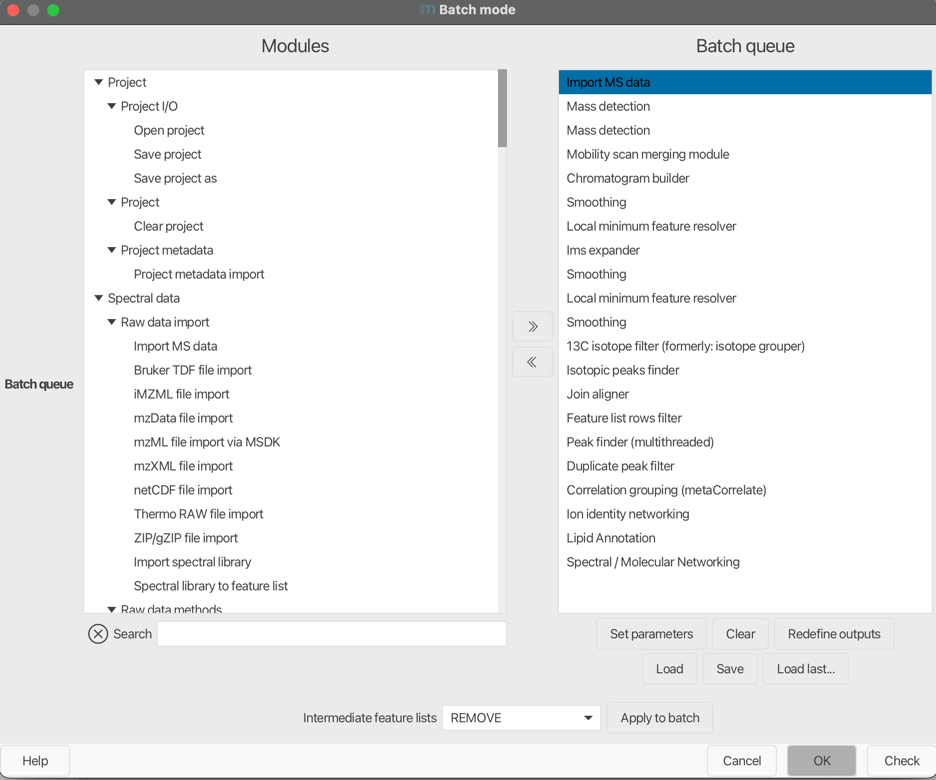

Processing wizard¶
The processing wizard reduces the configuration of complex standardized workflows into few parameters. Those values are used to estimate or calculate all other parameters from spectral processing over feature detection and alignment to annotation and data export. The wizard organizes the different parts of the instrumental setup to define a workflow split up into: Sample introduction, IMS, MS instrument, workflow. More specific workflows are planned and we are open for ideas and contributions. Feel free to reach out if your workflow might be a candidate for a wizard setup.
Processing wizard
Tip
The wizard is split into sections, most importantly, the MS part and the chromatography part. Parameters here reflect the sensitivity, resolution, and accuracy of these parts of the hyphenation. Selecting one of the default presets actually populates the initial values.
Danger
The defaults are only suggestions and different acquisition methods and instruments produce different noise levels etc. The raw data overview and aligned feature lists are useful to optimize these parameters.
Parameter tabs¶

Produces this batch:

Data import¶
Specify all data files that need to be processed
Sample introduction system¶
Depends on the selected sampling system, e.g., MALDI, HPLC, ...
Chromatography-based¶
Smoothing¶
Apply smoothing to the chromatograms. Smoothing should not be used for data low MS1 acquisition rates (e.g. below 5 data points per chromatographic peak/feature).
Influences batch steps: Smoothing
Stable ionization across samples¶
Used during feature grouping of adducts and other ions of the same molecule. Only use if the matrix ( e.g., salt content, same culture medium, only fresh OR sea water samples) and ionization efficiencies are comparable across the whole study.
Influences batch steps: Correlation grouping
Crop retention time¶
Crops the chromatograms at these retention time values. Useful to cut off the start and the end of the chromatograms. The start is often diverted into the waist and the end often contains the cleanup procedure.
Influences batch steps: Chromatogram building Local minimum feature resolver ( Calculation of chromatographic threshold)
Max peaks in chromatogram¶
An estimate of the number of isomers and isobaric ions in the chromatograms. Used to estimate the percentage of data points that hold useful data for the feature resolving step. (Chromatographic threshold in local minimum resolver).
Influences batch steps: Local minimum feature resolver ( Calculation of chromatographic threshold)
Minimum consecutive scans¶
Only keep chromatograms and features with at least X data points in retention time dimension.
Influences batch steps: Local minimum feature resolver, Smoothing, Gap filling
Approximate feature FWHM¶
The full-width at half maximum of peaks in retention time dimension. Best extracted from the feature tables of already processed test datasets or from the raw data overview.
Influences batch steps: Local minimum feature resolver, (Minimum search range)
RT tolerance (intra-sample)¶
Retention time tolerance to group adducts and isotopes of the same molecule. The comparison is performed within each individual sample, usually leading to small variance.
Influences batch steps: Isotope grouping, Correlation grouping
RT tolerance (sample-to-sample)¶
Retention time tolerance to align features across all samples. Dependent on retention time shifts.
Influences batch steps: Join Aligner, Gap filling, Local compound database search
Ion mobility instrument¶
Smoothing¶
Applies smoothing to the ion mobilograms. This should be enabled for long ramp times in TIMS instruments.
Influences batch steps: Smoothing
Minimum consecutive scans¶
The number of consecutive scans/datapoints in a valid ion mobilogram and feature. Increase this for longer ramps in TIMS instruments.
Influences batch steps: Smoothing (mobility dimension), Local minimum resolver (mobility dimension)
Approximate feature FWHM¶
The full-width at half maximum for IMS features with regard to the IMS dimension.
Influences batch steps: Local minimum resolver (mobility dimension)
MS instrument, e.g., Orbitrap, qTOF, FTICR¶
Noise threshold (MS1/MS2)¶
Choose the mass detector from the drop down menu. Choose the Factor of lowest signal for both centroided or profile data where each spectrum contains noise signals, often represented by many signals at the same low intensity (spectral grass). This may correspond to static noise or single counts. If the spectra are free of noise, for example because they were already filtered, use an absolute intensity threshold.
Depending on the selected mass detector, separate absolute noise levels or factors are defined to threshold spectra of MS level 1 and 2 (or above). So the MS2 noise level is used for MSn data with level > 1. These parameters can be optimized by looking at the spectral raw data in the raw data overview.
Influences batch steps: Mass detection (MS1, MSn) 1/5th of the value is used for ion mobility scans.
Minimum feature height¶
The minimum height of chromatograms and features.
Influences batch steps: ADAP Chromatogram builder, Local minimum feature resolver (RT dimension), Local minimum feature resolver (IMS dimension), DIA MS2 grouping (todo documentation), RT Calibration
Scan-to-scan m/z tolerance¶
Relative and absolute m/z tolerance. Always applies the maximum tolerance based on the m/z this means that smaller and higher values are stronger affected by the absolute and relative tolerance, respectively. Used to find the same signal in different scans when connecting chromatograms. Reflects on the mass accuracy between scans in the same raw data file.
Influences batch steps: Mobility scan merging, ADAP Chromatogram builder, Gap filling, Lipid annotation (MS2), Spectral library search, Spectral/Molecular networking (todo: documentation), DIA MS2 grouping (todo documentation)
Feature-to-feature m/z tolerance¶
Relative and absolute m/z tolerance. Always applies the maximum tolerance based on the m/z this means that smaller and higher values are stronger affected by the absolute and relative tolerance, respectively. Used to group isotopes and adducts of the same molecule. Those m/z values are already averaged over their features and should have lower m/z differences that the scan to scan tolerance.
Influences batch steps: Isotope filter Isotope finder Ion identity networking Duplicate filter
Sample-to-sample m/z tolerance¶
Relative and absolute m/z tolerance. Always applies the maximum tolerance based on the m/z this means that smaller and higher values are stronger affected by the absolute and relative tolerance, respectively. Used to align features across samples. Those m/z values are already averaged over their features but originate from different samples.
Influences batch steps: Join Aligner Local compound database search Lipid annotation (MS1) ADAP aligner
Filters¶
Original feature list¶
Options to either keep or remove the original feature lists. Keep is valuable during workflow optimization whereas remove saves resources and allows for more performant processing or large datasets. (See section on performance).
Influences batch steps: all batch steps that create a new feature list.
Min samples per aligned feature¶
Only keep aligned features that were detected in at least n samples. This parameter should usually scale with the sampleset size and if samples are relatively similar from their compounds. Uses the maximum of an absolute and relative value.
Influences batch steps: Feature list rows filter
Only keep features with 13C¶
Detect isotope pattern and only keep feature with valid 13C isotope pattern.
Influences batch steps: Feature list rows filter
Annotation¶
Spectral library files¶
Select all spectral libraries to import and use during spectral library matching to annotate compounds in the final aligned feature list.
Influences batch steps: Spectral library search
Custom database search (CSV)¶
- Specify the database file (csv or tsv format).
- Select m/z option to either
- calculate from given neutral mass (or formula/structure)
- use provided precursor m/z in column
- Filename column is only used for the library generation workflow
- Columns map the table column headers to the internal names in MZmine
Influences batch steps: Custom database search
Workflows¶
Most of the parameters in the workflow section define data output and some workflow specific parameters.
General parameters¶
- Define an export path and base file name, e.g., "D:\analysis\date_project" this will create a new folder and save all files from export modules there. Each module will add a specific suffix to the file name.
- Apply spectral networking (FBMN/IIMN): Will compare all MS2 spectra across features to form molecular networks by spectral similarity.
- Export for molecular networking (e.g., GNPS, FBMN, IIMN, MetGem): Will export all files for molecular networking
- Export for SIRIUS: Will export all files needed for SIRIUS
- Export annotation graphics: Exports annotations like spectral library matches, lipid matches, etc to graphical reports. Contains options to also export chromatographic/ion mobility shapes, images, and other plots.
Workflow parameters and descriptions¶
DDA¶
The data-dependent acquisition workflow is the default non target workflow. We recommend to also use this workflow for targeted analysis and combine it with the local CSV database search and spectral library search (Annotation).
Library generation¶
More method and contributor metadata is required to build spectral libraries. This workflow produces reference libraries with options to filter and merge spectra.